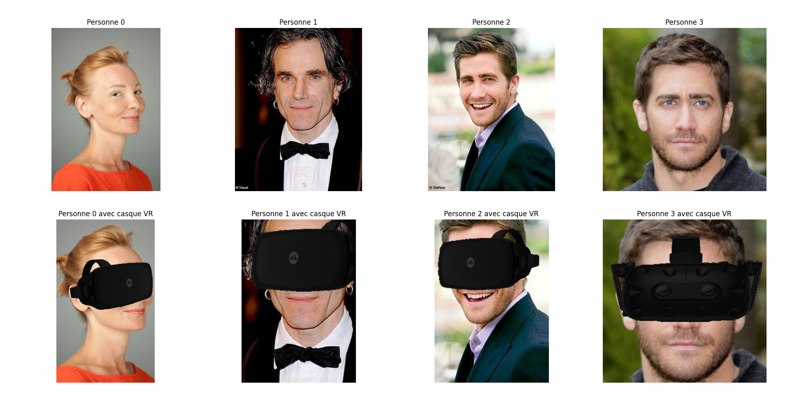

Duration
February 2024 - July 2024
Location
Université de Technologie de Compiègne
Description
This project explores the intersection of virtual reality (VR) and emotion recognition, focusing on the challenges posed by facial occlusions when users wear VR headsets. We developed an augmented reality (AR) algorithm that overlays a virtual VR headset onto faces, allowing us to simulate the conditions of VR usage in datasets. Using facial landmarks and real-time transformations, the algorithm accurately positions and scales the headset, creating a realistic simulation.
We then applied this AR technique to a dataset, training a simple model to recognize emotions from faces partially obscured by a VR headset. The results, however, revealed limitations in emotion detection due to the occlusion of key facial regions, such as the eyes and eyebrows, which are crucial for recognizing certain emotions like anger. Despite achieving a 67% accuracy rate during training, the model struggled with real-world scenarios, reflecting the complexity of emotion recognition in VR. To address these challenges, we propose integrating additional data from eye-tracking and head position analysis, which could enhance the model's ability to interpret emotions even when facial features are obscured. This multimodal approach aims to provide a more comprehensive understanding of the user's emotional state in VR environments, paving the way for more immersive and emotionally responsive VR experiences.